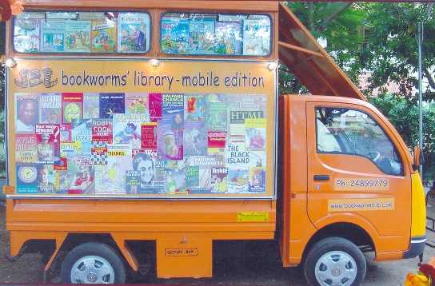
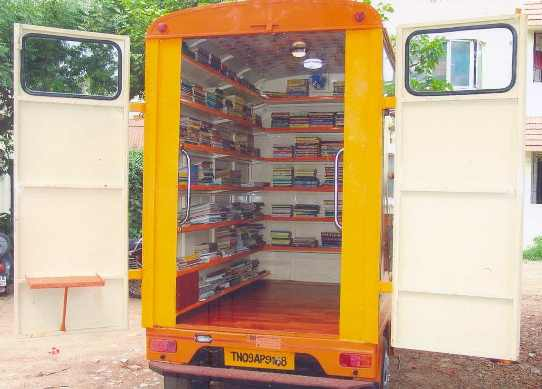

#stories library cafe |
|
Search
Library on Wheels

Static - stories (bookworms' library) in KK Nagar was established in December 2001 and today it has over 2000 members using the services in and around. During these years, we found inspiration from many – both children and adults, about books and a love of reading. Unfortunately, those are not in a position to come over to our library in KK Nagar, as just merely they are not in their close proximity. Bookworms’ has been at the receiving end of many complaints from parents that children are wasting time in watching TV soaps, and playing addictive Computer games. They figured out that a possible reason is that there is no good library in their neighourhood where focus could be diverted to reading. After breaking our heads over this issue, we struck upon an ingenious plan… We chose to transform a mini truck into an inspirational wagon, decorated with lights and fans inside, with sufficient stacking of reading materials for different age group, and drive over to various areas periodically thereby motivating them and encouraging the kids to read books. So next time you open your window and smell the fresh air coming in, there you can see, the "library on wheels" trundling down to your doorstep !
Services - Available only for Chennaities
Residents of the areas where our mobile library visits periodically can become members and borrow books and magazines (bound) for specific period against their paid monthly subscriptions. Members can also reserve titles they want and get them by the next visit.
Stock Available

This sleek and shiny vehicle will carry about 2000 items, duly shelved for the convenience of the members. Those reading materials include books and old magazines in bound condition – suiting to the reading tastes of various age groups ranging from 5 onwards. Children can find colorful books on Animals, Fairy Tales, Moral Stories, Comics like Tinkle, Tintin, Asterix, Junior Fictions & series, written by eminent authors from Enid Blyton to RK Narayan to JK Rowling. General subjects like Science, Mathematics, Language, Sports, History will also be covered. And, undoubtedly, books on Biographies, GK, Quiz and Jokes could also be located. And for Adults, Fictions from Sidney Sheldon to Jeffrey Archer to Danielle Steel, Tamil Novels from Balakumaran to Sujatha to Sivasankari, Self-improvement, Biographies, Management, Cookery, Interior Design, Religion, Health & Yoga would be the major findings.
Mobile Library Routes (Proposed)
| Areas of Coverage |
|---|
| Vadapalani - Saligrammam - Virugambakkam - Valasarawalkam - Chinmayanagar |
| Nesapakkam - Ramapuram - Manappakkam - DefenceClny - Ekkaduthangal - Ashoknagar |
| Samiyarmadam - Westmambalam - Kodambakkam - Trustpuram |
| CIT Nagar - Nandanam - Alwarpet - Mylapore - Mandaveli - RA Puram |
| Kotturpuram - Adyar - Sastrinagar - Indiranagar - Besantnagar - Thiruvanmiyur |
| Velachery - Puzuthiwalkam - Madipakkam - Nanganallur |
| Koyambedu - Annanagar - Thirumangalam - Ambattur |
| Pallavaram - Chromepet - Sanatorium - Tambaram - Selayur |